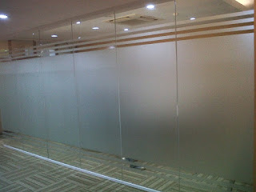

Kaca yakni salah satu material rumah yang pasti senantiasa ada, utamanya sebagai jendela. Kita sering kali menemui material-material hal yang demikian pada gedung, kantor, industry malah rumah hunian. Kaca juga awam diaplikasikan sebagai material untuk pintu, furnitur, railing tangga, shower box, kanopi, table top, dan malah panel dinding.
Sekarang sudah hadir pelbagai maca ragam kaca yang bisa ditemui, setiap kaca mempunyai fungsinya masing-masing. Bisa untuk system keamanan, estetika dan masih banyak yang bisa di temukan dari pemasangan kaca. Variasi kaca-kaca tersebut diantaranya ialah kaca tempered Ambon, kanopi kaca, kaca frameless, kaca cermin, railing kaca dan masih banyak ragam kaca lainnya yang bisa anda dapatakan dan anda aplikasikan pada bangunan. Segala material hal yang demikian dapat di aplikasikan harga sebuah hunian nampak lebih indah nyaman dan juga aman.
Jasa Pemasangan Kaca Tempered Ambon
Tak yang sudah di ketahui bahwa jasa jasa pemasangan kaca tempered Ambon hanya dikerjakan oleh orang yang profesional. Selain ini disebabkan bahan ini bukan jenis kaca biasa. Dis.or.id mempunyai segala kekuatan spesialis yang di rekrut hanya mereka yang profesional yang tahu persis bagaimana metode menerapkan alat dan bagaimana membersihkan kaca gedung bertingkat. Selain itu saja. Selain sembarang tukang juga bisa menjalankan pelaksanaan pemotongan ini.
Jikalau itu, berbagai bagian properti akan kian menarik bila dijadikan dari kaca tempered Ambon seperti kanopi, pintu, kamar mandi, dan balkon.
Banyak hal yang dapat dilakukakn kaca tempered Ambon ini salah satunya sebagai pembatas, untuk kamar mandi dan masih banyak lagi. Bukan sembarang alat yang digunakan untuk memotong kaca tempered Ambon pantas dengan kebutuhan. Jikalau aman kaca tempered Ambon juga cakap memberikan kesan keindahan yang sungguh-sungguh baik dibandingkan dengan kata variasi lainnya. Anda bisa seketika mengunjungi dis.or.id untuk menerima isu mengenai jasa pemasangan kaca tempered Ambon, mengaplikasikan kaca tempered Ambon dan pastinya hasil yang dikasih pun akan layak dengan apa yang Anda inginkan.
Info Pemesanan Selengkapnya
Google Maps: https://www.google.com/maps/d/u/0/viewer?mid=1wHa3dBFC0jOCBS2FtlNAYKtIEp5M6KyQ&ll=-7.27380280025364%2C112.65243155000007&z=18
Note: https://www.facebook.com/notes/distributor-of-industrial-supply/kontraktor-jasa-pemasangan-kaca-tempered/1785713878395158/
Event: https://www.facebook.com/events/260234754508702/
Portfolio Produk: https://www.facebook.com/1681607345472479/photos/?tab=album&album_id=1712631995703347
Distributor & Supplier Kaca Shower

Anda pastinya meninginkan desain kamar mandi rumah layaknya kamar mandi hotel berbintang yang memakai kamar kecil duduk serta dilengkapi shower ataupun bath tub. Salah satu metode yang bisa diterapkan untuk menciptakan kamar mandi yang selalu bersih yaitu menerapkan shower sebab metode pembersihannya memang jauh lebih praktis dibanding dengan yang memakai konsep bak mandi. Tak berharap lebih sempurna lagi, kamar mandi yang mengaplikasikan shower ini dapat dilengkapi dengan bagian lain yakni shower screen atau bisa disebut dengan kaca shower.
Dis.or.id menyediakan kaca shower dengan kwalitas premium sehingga dikala dipasang akan segera nampak mewah. Disana anda bisa mendapat kaca shower yang berkwalitas dan harga yang juga terjangkau. Harga yang ditawarkan malahan tergolong sangat murah.
Distributor, Supplier & Jasa Pasang Kanopi Kaca
Salah satu macam kanopi kaca yang dapat anda aplikasikan pada atap merupakan atap kaca skylight yang ialah kanopi kaca dalam bentuk jendela horizontal atau kubah yang lazimnya ditempatkan di atap bangunan yang mempunyai maksud untuk pencahayaan ruangan. Anda dapat memilih kanopi kaca yang sesuai dengan kebutuhan dan kemauan anda. Canopy kaca dengan atap kaca memang sebuah bangunan yang asangat elgan untuk jaman modern seperti kini ini dengan harga yang sungguh-sungguh lumayan jikalau di bandingkan kanopi atap lazim. Ada banyak opsi varian desain. {Jika tembus pandang, kaca meresap cahaya yang masuk sehingga semakin tebal kaca maka semakin sedikit sinar yang dapat melewatinya, maka sifat transparannya makin berkurang.|Di samping pintu kaca shower akan membuat kamar mandi kecil kelihatan lebih besar.
Seiring dengan perkembangan dunia properti, kini kanopi kaca tempered Ambon telah berkembang pesat mengikuti arsitektur modern. Selain disana anda bisa mendapatkan penawaran mengenai jasa pemasanga kanopi kaca. Seandainya fungsi utama kanopi sebagai pelindung untuk bangunan hal yang demikian, pemasangan kanopi kaca juga dapat membikin bangunan menjadi nampak lebih cantik dan menarik, apalagi menerapkan konsep yang sama dengan konsep rumah minimalis. Tidak anda sedang mencari kanopi kaca, anda dapat lantas mengunjungi dis.or.id.
Jasa Maintenance Kaca
Jasa maintenance kaca menjadi solusi bagi Anda yang memiliki gedung yang terbuat dari kaca. Umumnya ditahui banyak pemilik gedung kaca yang ingin merawat bangunan. Kaca menjadi kusam. Kelengkapan macam kotoran seperti debu serta cahaya matahari dan juga hujan sering membuat kaca gedung menjadi kusan dan tidak menarik.
Kini juga hadir maintenance kaca untuk membersihkan kaca berbentuk melengkung. Lebih dari itu, Kalau ahli yang dimilik oleh dis.or.id juga dapat mengoreksi kaca yang rusak. Dis.or.id menyiapkan seluruh macam kaca cocok keperluan ketika ini.
Tidak anda mebutuhkan jasa maintenance kaca, anda bisa mengunjungi dis.or.id. Dengan energi pakar yang siap untuk menjalankan pembersihan dan bahan pembersih yang di miliki, kaca gedung perkantoran Anda akan menonjol seperti baru lagi. Oleh karena itu, dis.or.id hanya memilih orang-orang yang sungguh-sungguh profesional dan sudah memiliki pengalaman dalam hal maintenance kaca.
Distributor & Supplier Pintu Kaca

Pintu kaca benar-benar berguna bagi anda yang ingin menabah kesan gedung lebih cantik dan mewah. Tidak cuma di gedung atau perkantoran, tapi pntu kaca juga bisa anda aplikasikan pada rumah agar cahaya bisa seketika masuk pada ruangan dan memberikan suasana hangat. Ada juga pintu kaca dengan bingkai dengan desain yang berbeda seperti folding dan sliding. Tidak Anda ingin mempunyai pintu kaca lipat yang terdiri dari sebagian pigura. Anda dapat pilih bahan untuk bingkai yang Anda inginkan, apakah itu dibuat dari aluminum atau dari kayu. Dalam hal ini, terdapat sebagian ragam kaca dengan kualitas yang terbaik. Sekarang paling banyak diminati ketika ini merupakan kaca tempered Ambon karena jauh lebih kuat dan bendung lama.
Kalau pakar yang betul-betul profesional sehingga benar-benar siap untuk menciptakan pintu kaca seperti apa yang berharap Anda miliki.
Kaca yang di gunakan yaitu kaca dengan kualitas terbaik. Dis.or.id mempunyai tenaga yang telah benar-benar profesional di bidang ini.
Jual Kaca Cermin
Kaca cermin sekarang tidak cuma dipakai sebagai aksesoris untuk perabotan seperti lemari rias. Kaca cermin dilapisi dengan pelapis transparan tipis dan oksida logam sebagai lapisan pelapis. kaca cermin biasa diaplikasikan pada bukaan pintu atau jendela dinding luar, yang nantinya diharapkan berpenampilan mewah pada bangunan. Banyak produsen kaca cermin yang membikin dengan desain yang berbeda. Ada cermin persegi yang dilekatkan beraturan, cermin berbentuk seperti daun, dan lain sebagainya. Malahan juga komponen tepi. Sekarang perlu dilihat juga adalah apakah Anda mau mempunyai kaca cermin desain minimalis atau yang elegan. Cermin minimalis memiliki siku.
Dis.or.id ialah penyedia berbagai ukuran kaca cermin yang dapat anda aplikasikan ke gedung, kantor maupun rumah anda. Malah, ada juga furniture berupa pintu yang terbuat dari kaca cermin. Atau barangkali Anda mengharapkan kaca cermin yang lantas bisa ditempel pada bagian furniture tertentu seperti pintu lemari. Tidak model lemari pakaian di mana bagian pintunya terbuat dari kaca cermin. Jadi, orang di luar tidak dapat memperhatikan Anda berada di dalam. Melainkan, Anda bisa memperhatikan orang lain dari dalam rumah. Namun kunjungi dis.or.id untuk mendapatkan penawaran menarik. Disana anda bisa mendapatkan kaca cermin yang pantas dengan harapan anda.
Jasa Pemasangan Railing Kaca
Railing kaca sekarang kian banyak pilihannya. Tak rumah Anda sudah dibangun dengan desain minimalis, karenanya tak salah dikala railing, entah itu railing tangga dan balkon terbuat dari kaca. Kecuali ini disebabkan semakin banyak permintaan terhadap railing ini. Ada banyak pilihan desain railing kaca yang dapat Anda pilih, dengan ukuran serta bahan yang berbeda. Tetapi, selain desain, Anda juga perlu memandang bahan yang diaplikasikan. Malahan juga bahan yang diaplikasikan.
Dalam hal ini, ada banyak ragam kaca yang bisa dipakai untuk membuat railing ini. Ini jenis kaca yang sungguh-sungguh kuat. Jikalau itu, kaca ini dapat pecah tapi tidak memunculkan pecahan yang runcing namun pecahan kecil-kecil dan lembut. Dikatakan sungguh-sungguh aman lantaran kaca tempered Ambon tidak memunculkan pecahan yang runcing saat tiba-tiba kaca pecah entah itu dampak kecelakaan atau bencana seperti gempa. Pecahannya betul-betul kecil dan lembut sehingga tidak akan melukai siapa saja yang terkena pecahan. Kini pasti, railing kaca ini menjadi pilihan yang ideal. Pastikan juga aluminum ini benar-benar baik dan kuat.
Railing kaca dengan kwalitas terbaik dapat anda temukan di dis.or.id. ukuran dan ketebalan railing kaca sudah tersedia. Tentu dengan harga yang murah melainkan tetap berkelas.
Jasa Pemasangan Kubikel Toilet

Kubikel kamar kecil mempunyai desain yang mewah dan elegan sehingga siapa saja yang memandangnya pasti akan berminat, tak cuma itu kubikel kaca memberikan kesan bersih, rapid an tersusun. Tetapi, seiiring berkembangnya desain interior, kamar mandi malah bisa di sekat dengan penyekat dari kaca.
Rumah sakit dan perkantoran. Banyak profit yang dapat di dapatkan dengan menggunakan kubikel WC diantaranya adala efisiensi, dimana dalam satu ruangan bisa menampung dan membuat banyak kamar mandi. Kaca juga dapat menjadi solusi estetika kamar mandi, tetapi juga dapat jadi persoalan kalau Anda memakai material dan tempat yang salah. Karena disana terdapat kubikel toilet dengan beraneka ukuran serta ketebalan kaca.
Profit dari sekat kaca memberikan yakni bisa memberikan efek luas sebab ruangan tersekat melainkan secara visual tak.
Melainkan penggunaan kaca di kamar mandi dapat jadi masalah saat Anda meletakkannya dengan salah. Apabila anda dikala ini sedang memerlukan kaca shower untuk kamar mandi, langsung saja kunjungi dis.or.id untuk melakukakn pemesanan ataupun menanyakan mendetail harga dari kaca shower. Kaca shower yang di jual di jamin kaca shower yang mempunyai mutu terbaik dan bermutu tinggi.
Distributor & Supplier Pintu Lipat Kaca
Bukan cuma bagian depan saja yang dipasang pintu kaca lipat namun komponen dalam juga dapat. Secara awam, kaca dibagi menjadi 6 jenis, merupakan kaca jernih, kacang berwarna atau tinted glass, kaca es, kaca cermin atau one way glass, kaca laminasi, dan yang terakhir kaca tempered. Tapi diakui bahwasannya ada tipe kaca yang harganya di bawah kaca tempered. Melainkan, Kalau Anda hitung kembali, selisih harganya tidaklah terlalu banyak.
Harga pintu kaca lipat frameless ini sangat diberi pengaruh oleh ukuran lebar dan tingginya pintu. Banyak pertimbangan yang membikin Anda pasti yakin untuk memilih kaca tempered daripada ragam kaca yang lainnya. Dan yang pasti, ruangan menjadi lebih modern, minimalis, dan nyaman untuk ditempati. Jadi, bukan cuma pintu saja yang berupa kaca, tetapi juga seluruh sekat ruangan.
Distributor & Supplier Partisi Kaca

Partisi kaca menjadi opsi yang bagi Anda yang menghemat tarif bangunan. Sudah banyak properti yang mengaplikasikan bahan berupa kaca sebagai partisi. Anda dapat lihat di sentra perbelanjaan modern, hotel, dan juga perkantoran. tertentu seperti kamar mandi dalam atau taman dalam ruang yang umumnya terdapat di tengah atau belakang rumah biasanya mengaplikasikan pembatas berupa partisi kaca. Anda dapat menghitung sendiri berapa uang yang wajib Anda siapkan untuk membeli bahan untuk partisi tembok. Lain sekiranya Anda memilih partisi kaca. Bahan ini lebih murah dan mudah dalam pemasangan. Jadi, Anda akan sungguh-sungguh berhemat jikalau memilih untuk memasang partisi kaca ini. Anda mengikuti mereka. Kecuali, Anda mesti tahu ada desain yang berbeda. Ada partisi kaca frameless atau tanpa pigura dan partisi dengan bingkai. Kecuali, Anda sepatutnya kwalitas kaca yang . itu, contoh partisi kaca ada yang frameless (tanpa bingkai) dan juga ada yang menggunakan bingkai.